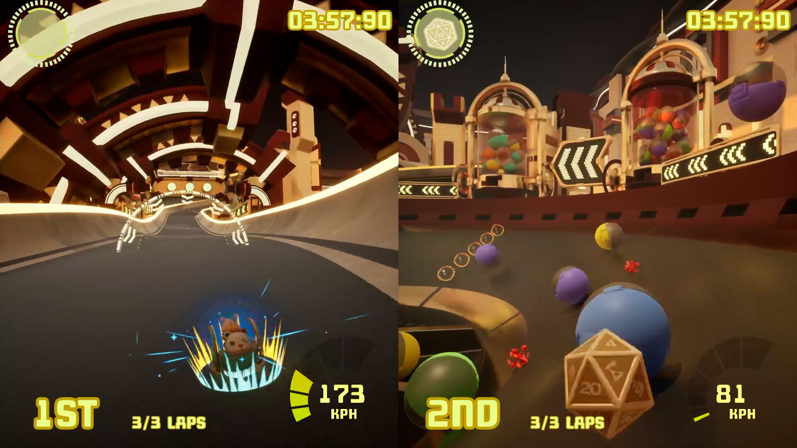
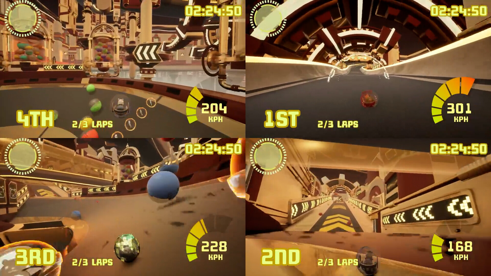

Hamsterballin'
Track 1 Level Design & Item Blueprint Scripting

Project Overview
Hamsterballin' is a competitive arcade racing game. Players control characters inside hamster balls, rolling, bouncing, and racing across themed tracks while using route choices, shortcuts, and items to interfere with opponents. Unlike a traditional kart racer, the physical movement of the hamster ball is itself a central part of route judgment and input rhythm.
My Contributions
- Track 1 Level Design: I designed Track 1, organizing its routes and racing rhythm around the hamster ball's rolling and bouncing movement.
- Item Blueprints: I implemented Blueprint logic for selected gameplay items.
- Final Implementation: Some of the items I helped script were included in the final release.
Design Focus
Track Design and Ball Physics
The hamster ball rolls continuously and bounces from slopes and collisions. The track must therefore let players read turns, edges, landing points, and speed changes in advance instead of relying only on conventional vehicle-steering experience.
Readability in Multiplayer Racing
Multiple players and item effects are present at the same time. Routes, obstacles, and shortcuts must remain clear so players can quickly judge the way forward while moving at high speed and interfering with one another.
Game Screenshots




The images above are from the game's public Steam page. Track 1 plans, iteration diagrams, or Blueprint screenshots can be added later to provide a more detailed breakdown of my individual design work.